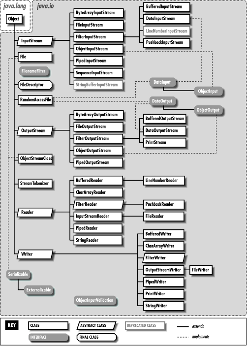
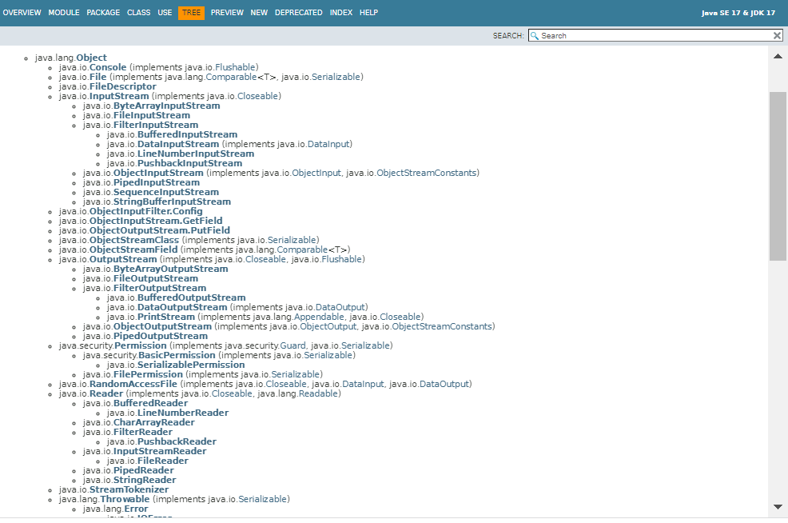
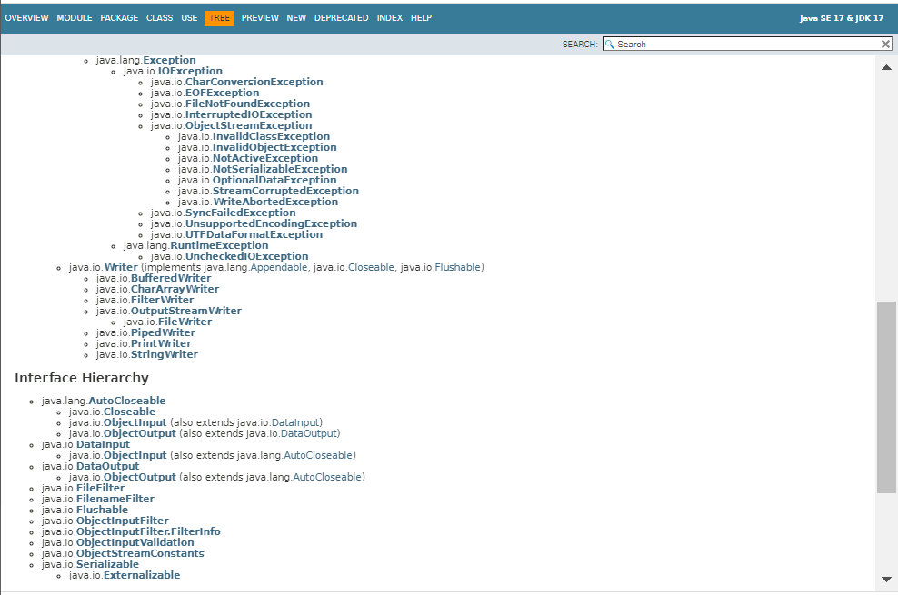
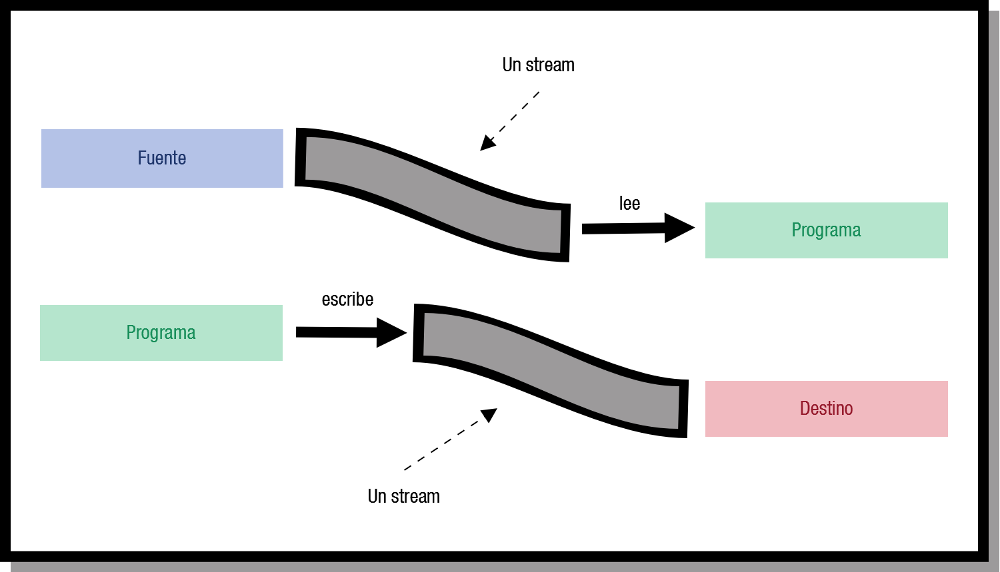
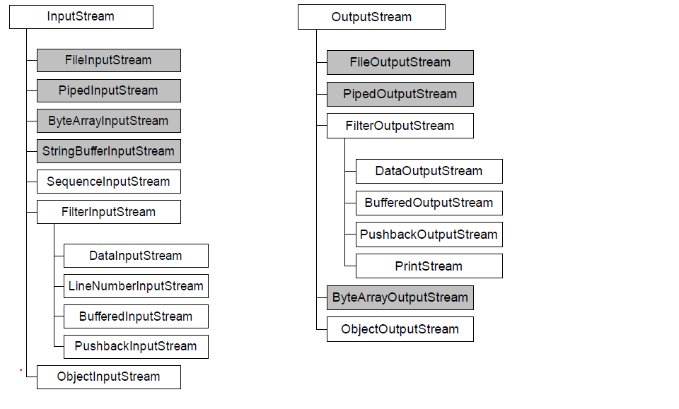
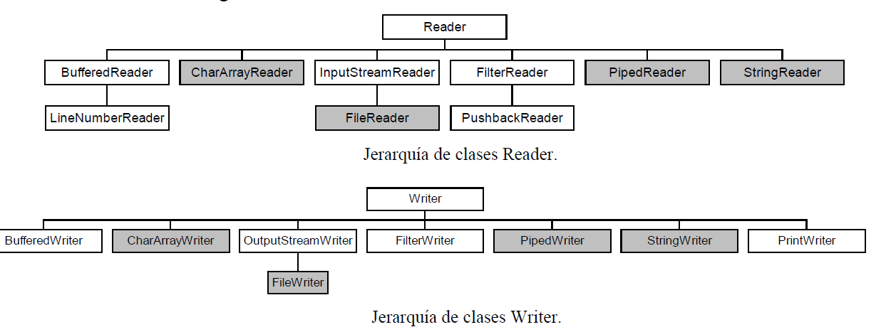

Imprimir el Libro Completo
Imprimir el Libro Completo2A Manejo de ficheros
| Sitio: | ALONSO DE AVELLANEDA |
| Curso: | Acceso a Datos Vespertino |
| Libro: | 2A Manejo de ficheros |
| Imprimido por: | Oliver Bitica |
| Día: | lunes, 21 de septiembre de 2026, 20:20 |
Descripción
Estudiarás a utilizar ficheros como forma de persistencia de datos. Utilizando dos API: la API IO
Tabla de contenidos
- 1. Introduccion
- 2. java.io
- 2.1. Streams o flujos.
- 2.2. Clases asociadas a los flujos
- 2.3. Formas de acceso a un fichero.
- 2.4. Clase File
- 2.5. Creacion y eliminacion de ficheros y directorios
- 2.6. Interface Filenamefilter
- 2.7. Flujos basados en bytes.
- 2.8. Serializacion de objetos
- 2.9. ejemplo de serializacion de objetos
- 2.10. Flujos basados en caracteres.
- 2.11. Operaciones básicas sobre ficheros de acceso secuencial.
- 2.12. Operaciones básicas sobre ficheros de acceso aleatorio.
- 2.13. enlaces de interés
1. Introduccion
Si estás estudiando este módulo, es probable que ya hayas estudiado el de programación, por lo que no te serán desconocidos muchos conceptos que se tratan en este tema.
Ya sabes que cuando apagas el ordenador, los datos de la memoria RAM se pierden. Un ordenador utiliza ficheros para guardar los datos.
Se llama a los datos que se guardan en ficheros datos persistentes, porque persisten más allá de la ejecución de la aplicación que los trata. Los ordenadores almacenan los ficheros en unidades de almacenamiento secundario como discos duros, discos ópticos, etc. En esta unidad veremos, entre otras cosas, cómo hacer con Java las operaciones de crear, actualizar y procesar ficheros.
A las operaciones, que constituyen un flujo de información del programa con el exterior, se les conoce como Entrada/Salida (E/S).
Hay dos paquete en java que tienen las clases necesarias para la gestion de ficheros java.io y java.nio. . Entre los 2 proporcionan las siguientes características:
- Entrada y salida con streams, serialización.
- Charsets, decodificadores y codificadores para caracteres.
- Acceso al Sistema de archivos, a los archivos y sus atributos.
- APIs para desarrollar servidores escalables con I/O asíncrona, multiplexada y no bloqueante. (No lo abordamos en este curso)
java.io se basa en el concepto de flujo (“Stream”), es bloqueante, mientras que las operaciones I/O con java.nio se basan en el concepto de buffer y canal (channel) no son bloqueantes
Java.io es el paquete tradicional del API de Java para realizar operaciones de I/O.
Incorpora interfaces, clases y excepciones para acceder a todo tipo de ficheros.
La librería java.io contiene las clases necesarias para gestionar las operaciones de entrada y salida con Java. Estas clases de E/S las podemos agrupar fundamentalmente en:
- Clases para leer entradas desde un flujo de datos.
- Clases para escribir entradas a un flujo de datos.
- Clases para operar con ficheros en el sistema de ficheros local.
- Clases para gestionar la serialización de objetos.
java.nio (Non- Blocking I/O) fue introducido en el API de Java desde la versión 1.4 como extensión eficiente a los paquetes java.io y java.net. Java NIO ofrece una forma diferente de trabajar con IO que las API de IO estándar. Se basa en el “Buffer” y el “Channel”.
java.io vs java.nio
- Depende de lo que necesitemos pueden ser complementarios y utilizaremos conjuntamente ambos paquetes.
- java.nio permite manejar múltiples canales (archivos o conexiones de red) con uno o unos pocos hilos.
- En java.nio el procesamiento de datos es más complicado que usar los streams bloqueantes de java.io
- java.nio es la opción si necesito manejar cientos de conexiones (canales) abiertas y en cada una manejar una pequeña cantidad de datos.
- java.io es la opción si voy a manejar pocas conexiones con un alto ancho de banda (envío mucha información a la vez)
- Hasta JSE7 java.io.File era la clase utilizada para realizar operaciones I/O con archivos
- Esta clase tenía limitaciones como:
- Muchos métodos no lanzaban excepciones por lo que era muy complicado detectar y resolver errores
- No permitía manejar enlaces simbólicos
- Presenta problemas de escalabilidad. Directorios largos provocaban problemas de memoria e incluso de denegación de servicio
- El paquete java.nio.file incorporado a partir de JSE7 resuelve estos problemas.
- Es el que debemos usar para trabajar con archivos independientemente de si realizamos I/O con streams (java.io) ó con buffers y channels (java.nio)
2. java.io
Este capitulo cubre las clases de la plataforma Java utilizadas para E / S básica.
La librería java.io contiene las clases necesarias para gestionar las operaciones de entrada y salida con Java. Se basa en flujos de E/S (E/S Stream) , un poderoso concepto que simplifica enormemente las operaciones de E / S. Más adelante, analizaremos la serialización, que permite que un programa escriba objetos completos en flujos y los vuelva a leer y las operaciones de E / S de archivos y del sistema de archivos, incluidos los archivos de acceso aleatorio.
La librería java.io Estas clases de E/S las podemos agrupar fundamentalmente en:
- Clases para leer entradas desde un flujo de datos.
- Clases para escribir entradas a un flujo de datos.
- Clases para operar con ficheros en el sistema de ficheros local.
- Clases para gestionar la serialización de objetos.
En la imagen puedes ver las clases de las que se dispone en java.io.

Enlace a la documentación Oracle para JDK17:


2.1. Streams o flujos.
Un flujo es una abstracción de todo aquello que produce o consume información.
La vinculación de este flujo al dispositivo físico la hace el sistema de entrada y salida de Java.
Un stream es una conexión entre el programa y la fuente o destino de los datos. La información se traslada en serie (un carácter a continuación de otro) a través de esta conexión. Esto da lugar a una forma general de representar muchos tipos de comunicaciones.
Las clases y métodos de E/S que necesitamos emplear son las mismas independientemente del dispositivo con el que estemos actuando. Luego, el núcleo de Java sabrá si tiene que tratar con el teclado, el monitor, un sistema de archivos o un socket de red; liberando al programador de tener que saber con quién está interactuando.

Java define dos tipos de flujos en el paquete java.io:
- Byte streams (8 bits): proporciona lo necesario para la gestión de entradas y salidas de bytes y su uso está orientado a la lectura y escritura de datos binarios. El tratamiento del flujo de bytes viene determinado por dos clases abstractas que son InputStream y OutputStream Estas dos clases definen los métodos que sus subclases tendrán implementados y, de entre todos, destacan read()y write() que leen y escriben bytes de datos respectivamente.
- Character streams (16 bits): de manera similar a los flujos de bytes, los flujos de caracteres están determinados por dos clases abstractas, en este caso: Reader y Writer. Dichas clases manejan flujos de caracteres Unicode. Y también de ellas derivan subclases concretas que implementan los métodos definidos en ellas siendo los más destacados los métodos read() y write() que leen y escriben caracteres de datos respectivamente.
2.2. Clases asociadas a los flujos
Flujos de bytes
La entrada y salida de datos del programa se podía hacer con clases derivadas de InputStream (para lectura) y OutputStream (para escritura). Estas clases tienen los métodos básicos read() y write() que manejan bytes . En la siguiente figura se muestra las clases que derivan de InputStream y las que derivan de OutputStream.

las clases FileImputStream y FileOutputStream manejan los flujos de bytes dirigidos hacia ficheros o provenientes de ficheros. Los veremos mas adelante.
Flujos de caracteres
Las clases que manejan flujos de caracteres Unicode son las clases Reader y Writer de las que derivan entre otras las clases FileReader y FileWriter que se utilizan para la lectura y escritura de caracteres en un fichero

las clases con fondo gris definen de dónde o a dónde se están enviando los datos, es decir, el dispositivo con que conecta el stream. Las demás (fondo blanco)añaden características particulares a la forma de enviarlos.
Las clases ImputStreamReader y OutputStreamWriter convierten flujos de carácteres en flujos de byte .
2.3. Formas de acceso a un fichero.
en Java puedes utilizar dos tipos de ficheros (de texto o binarios) y dos tipos de acceso a los ficheros (secuencial o aleatorio). Si bien, y según la literatura que consultemos, a veces se distingue una tercera forma de acceso denominada concatenación, tuberías o pipes.
- Acceso aleatorio: los archivos de acceso aleatorio, al igual que lo que sucede usualmente con la memoria (RAM=Random Access Memory), permiten acceder a los datos en forma no secuencial, desordenada. Esto implica que el archivo debe estar disponible en su totalidad al momento de ser accedido, algo que no siempre es posible.
- Acceso secuencial: En este caso los datos se leen de manera secuencial, desde el comienzo del archivo hasta el final (el cual muchas veces no se conoce apriori). Este es el caso de la lectura del teclado o la escritura en una consola de texto, no se sabe cuándo el operador terminará de escribir.
2.4. Clase File
¿Para qué sirve esta clase, qué nos permite? La clase File proporciona una representación abstracta de ficheros y directorios.
Esta clase, permite examinar y manipular archivos y directorios, independientemente de la plataforma en la que se esté trabajando: Linux, Windows, etc.
Las instancias de la clase File representan nombres de archivo, no los archivos en sí mismos.
El archivo correspondiente a un nombre puede ser que no exista, por esta razón habrá que controlar las posibles excepciones.
Un objeto de clase File permite examinar el nombre del archivo, descomponerlo en su rama de directorios o crear el archivo si no existe, pasando el objeto de tipo File a un constructor adecuado como FileWriter(File f), que recibe como parámetro un objeto File.
Para archivos que existen, a través del objeto File, un programa puede examinar los atributos del archivo, cambiar su nombre, borrarlo o cambiar sus permisos. Dado un objeto File, podemos hacer las siguientes operaciones con él:
- Renombrar el archivo, con el método renameTo(). El objeto File dejará de referirse al archivo renombrado, ya que el String con el nombre del archivo en el objeto File no cambia.
- Borrar el archivo, con el método delete(). También, con deleteOnExit() se borra cuando finaliza la ejecución de la máquina virtual Java.
- Crear un nuevo fichero con un nombre único. El método estático createTempFile() crea un fichero temporal y devuelve un objeto File que apunta a él. Es útil para crear archivos temporales, que luego se borran, asegurándonos tener un nombre de archivo no repetido.
- Establecer la fecha y la hora de modificación del archivo con setLastModified(). Por ejemplo, se podría hacer: new File("prueba.txt").setLastModified(new Date().getTime()); para establecerle la fecha actual al fichero que se le pasa como parámetro, en este caso prueba.txt.
- Crear un directorio, mediante el método mkdir(). También existe mkdirs(), que crea los directorios superiores si no existen.
- Listar el contenido de un directorio. Los métodos list() y listFiles() listan el contenido de un directorio. list() devuelve un vector de String con los nombres de los archivos, listFiles() devuelve un vector de objetos File.
- Listar los nombres de archivo de la raíz del sistema de archivos, mediante el método estático listRoots().
- File f = new File("personas.dat");
Crea un Objeto File asociado al fichero personas.dat que se encuentra en el directorio de trabajo. En este caso no se indica path. Se supone que el fichero se encuentra en el directorio actual de trabajo. - File f = new File("ficheros/personas.dat");
Crea un Objeto File asociado al fichero personas.dat que se encuentra en el directorio ficheros dentro del directorio actual. En este caso se indica la ruta relativa tomando como base el directorio actual de trabajo. Se supone que el fichero personas.dat se encuentra en el directorio ficheros. A su vez el directorio ficheros se encuentra dentro del directorio actual de trabajo. - File f = new File("c:/ficheros/personas.dat");
Crea un Objeto File asociado al fichero personas.dat dando la ruta absoluta:
- File f = new File("ficheros", "personas.dat" );
Crea un Objeto File asociado al fichero personas.dat que se encuentra en el directorio ficheros dentro del directorio actual. En este caso se indica la ruta relativa tomando como base el directorio actual de trabajo.
- File ruta = new File("ficheros");
File f = new File(ruta, "personas.dat" );
Crea un Objeto File asociado al fichero personas.dat que se encuentra en el directorio ficheros dentro del directorio actual.
MÉTODO | DESCRIPCIÓN |
boolean canRead() | Devuelve true si se puede leer el fichero |
boolean canWrite() | Devuelve true si se puede escribir en el fichero |
boolean createNewFile() | Crea el fichero asociado al objeto File. Devuelve true si se ha podido crear. Para poder crearlo el fichero no debe existir. Lanza una excepción del tipo IOException. |
boolean delete() | Elimina el fichero o directorio. Si es un directorio debe estar vacío. Devuelve true si se ha podido eliminar. |
boolean exists() | Devuelve true si el fichero o directorio existe |
String getName() | Devuelve el nombre del fichero o directorio |
String getAbsolutePath() | Devuelve la ruta absoluta asociada al objeto File. |
String getCanonicalPath() | Devuelve la ruta única absoluta asociada al objeto File. Puede haber varias rutas absolutas asociadas a un File pero solo una única ruta canónica. Lanza una excepción del tipo IOException. |
String getPath() | Devuelve la ruta con la que se creó el objeto File. Puede ser relativa o no. |
String getParent() | Devuelve un String conteniendo el directorio padre del File. Devuelve null si no tiene directorio padre. |
File getParentFile() | Devuelve un objeto File conteniendo el directorio padre del File. Devuelve null si no tiene directorio padre. |
boolean isAbsolute() | Devuelve true si es una ruta absoluta |
boolean isDirectory() | Devuelve true si es un directorio válido |
boolean isFile() | Devuelve true si es un fichero válido |
long lastModified() | Devuelve un valor en milisegundos que representa la última vez que se ha modificado (medido desde las 00:00:00 GMT, del 1 de Enero de 1970). Devuelve 0 si el fichero no existe o ha ocurrido un error. |
long length() | Devuelve el tamaño en bytes del fichero. Devuelve 0 si no existe. Devuelve un valor indeterminado si es un directorio. |
String[] list() | Devuelve un array de String con el nombre de los archivos y directorios que contiene el directorio indicado en el objeto File. Si no es un directorio devuelve null. Si el directorio está vacío devuelve un array vacío. |
String[] list(FilenameFilter filtro) | Similar al anterior. Devuelve un array de String con el nombre de los archivos y directorios que contiene el directorio indicado en el objeto File que cumplen con el filtro indicado. |
boolean mkdir() | Crea el directorio. Devuelve true si se ha podido crear. |
boolean mkdirs() | Crea el directorio incluyendo los directorios no existentes especificados en la ruta padre del directorio a crear. Devuelve true si se ha creado el directorio y los directorios no existentes de la ruta padre. |
boolean renameTo(File dest) | Cambia el nombre del fichero por el indicado en el parámetro dest. Devuelve true si se ha realizado el cambio. |
2.5. Creacion y eliminacion de ficheros y directorios
Cuando queramos crear un fichero, podemos proceder del siguiente modo:try {
// Creamos el objeto que encapsula el fichero
File fichero = new File("c:\\prufba\\miFichero.txt");
// A partir del objeto File creamos el fichero físicamente
if (fichero.createNewFile())
System.out.println("El fichero se ha creado correctamente");
else
System.out.println("No ha podido ser creado el fichero");
} catch (Exception ioe) {
ioe.getMessage();
}try {
// Declaración de variables
String directorio = "C:\\prueba";
String varios = "carpeta1/carpeta2/carpeta3";
// Crear un directorio
boolean exito = (new File(directorio)).mkdir();
if (exito)
System.out.println("Directorio: " + directorio + " creado");
// Crear varios directorios
exito = (new File(varios)).mkdirs();
if (exito)
System.out.println("Directorios: " + varios + " creados");
}catch (Exception e){
System.err.println("Error: " + e.getMessage());
}2.6. Interface Filenamefilter
Hemos visto como obtener la lista de ficheros de una carpeta o directorio. A veces, nos interesa ver no la lista completa, sino los archivos que encajan con un determinado criterio.
Por ejemplo, nos puede interesar un filtro para ver los ficheros modificados después de una fecha, o los que tienen un tamaño mayor del que el que indiquemos, etc.
El interface FilenameFilter se puede usar para crear filtros que establezcan criterios de filtrado relativos al nombre de los ficheros. Una clase que lo implemente debe definir e implementar el método:
boolean accept(File dir, String nombre)
Este método devolverá verdadero en el caso de que el fichero cuyo nombre se indica en el parámetro nombre aparezca en la lista de los ficheros del directorio indicado por el parámetro dir.
En los ejemplos que vemos en el tema, estamos usando la ruta de los ficheros tal y como se usan en Windows, es decir, por ejemplo:
C:\\datos\Programacion\fichero.txt
ejemplo: uso del filtrado:
Listamos los ficheros de la carpeta c:\datos que tengan la extensión .txt. Usamos try y catch para capturar las posibles excepciones, como que no exista dicha carpeta.
import java.io.File;
import java.io.FilenameFilter;
public class Filtrar implements FilenameFilter {
String extension;
// Constructor
Filtrar(String extension){
this.extension = extension;
}
public boolean accept(File dir, String name){
return name.endsWith(extension);
}
public static void main(String[] args) {
try {
// Obtendremos el listado de los archivos de ese directorio
File fichero=new File("c:\\datos\\.");
String[] listadeArchivos = fichero.list();
// Filtraremos por los de extension .txt
listadeArchivos = fichero.list(new Filtrar(".txt"));
// Comprobamos el número de archivos en el listado
int numarchivos = listadeArchivos.length ;
// Si no hay ninguno lo avisamos por consola
if (numarchivos < 1)
System.out.println("No hay archivos que listar");
// Y si hay, escribimos su nombre por consola.
else
{
for(int conta = 0; conta < listadeArchivos.length;
conta++)
System.out.println(listadeArchivos[conta]);
}
}
catch (Exception ex) {
System.out.println("Error al buscar en la ruta indicada");
}
}
}Si analizamos la línea:
listadeArchivos = fichero.list(new Filtrar(".txt"));
Si vamos a la documentación de la clase File y Método list(FileNameFilter): https://docs.oracle.com/en/java/javase/25/docs/api/java.base/java/io/File.html#list()
public String[] list(FilenameFilter filter)
Devuelve una matriz de cadenas con los nombres de los archivos y directorios del directorio indicado por esta ruta abstracta que cumplen el filtro especificado.
El comportamiento de este método es el mismo que el del método list(), salvo que las cadenas de la matriz devuelta deben cumplir el filtro.
Si el filtro proporcionado es nulo, se aceptan todos los nombres. En caso contrario, un nombre cumple el filtro si y solo si se obtiene el valor true
al invocar el método FilenameFilter.accept(File, String) del filtro sobre esta ruta abstracta y el nombre de un archivo o directorio del directorio al que hace referencia.
Parámetros:
filter: un filtro de nombres de archivo
Devuelve:
Un array de cadenas que nombran los archivos y directorios del directorio al que hace referencia esta ruta abstracta y que han sido aceptados por el filtro dado.
El array estará vacío si el directorio está vacío o si el filtro no ha aceptado ningún nombre. Devuelve null si esta ruta abstracta no hace referencia a un
directorio o si se produce un error de E/S.
Aunque el parámetro de entrada es un interfaz de tipo FilenameFilter, lo que le hemos pasado es objeto de clase Filtrar. No obstante, Filtrar implementa el interfaz FilenameFilter, gracias al concepto del polimorfismo: una clase que implementa un interfaz es un interfaz (también).
2.7. Flujos basados en bytes.
Para el tratamiento de los flujos de bytes, hemos dicho que Java tiene dos clases abstractas que son InputStream y OutputStream
Las clases principales que heredan de OutputStream , para la escritura de ficheros binarios son:
- FileOutputStream : escribe bytes en un fichero.
- ObjectOutputStream : permite escribir objetos en un flujo de salida, serializándolos.
- DataOutputStream , que da formato a los tipos primitivos y objetos String , convirtiéndolos en un flujo de forma que cualquier DataInputStream , de cualquier máquina, los pueda leer. Todos los métodos empiezan por " write ", como writeByte() , writefloat() , etc.
- FileInputStream : lee bytes de un fichero.
- ObjectInputStream: convierte en objetos y variables los vectores de bytes leídos de un InputStream.
Escritura de bytes en un fichero: FileOutputStream:
Cabecera : public class FileOutputStream extends OutputStream
Constructores:
FileOutputStream(File file) Crea un flujo de salida de archivo para escribir en el archivo representado por el objeto File especificado.FileOutputStream(String name) Crea un flujo de salida de archivo para escribir en el archivo con el nombre especificado, se puede especificar también ruta al fichero en el sistema de archivos.FileOutputStream(String name, boolean append) Crea un flujo de salida de archivo para escribir en el archivo con el nombre especificado.Métodos:
- protected void finalize(): Se utiliza para limpiar la conexión con el flujo de salida del archivo.
- void write(byte[] b): Se utiliza para escribir el numero b.length de bytes desde el array de bytes al flujo de salida del archivo.
- void write(byte[] b, int off, int numBytes): Se utiliza para escribir numBytes bytes de la matriz de bytes comenzando en off al flujo de salida del archivo.
- void write(int b): Se utiliza para escribir el byte especificado en el flujo de salida del archivo.
- void close(): Se utiliza para cerrar el flujo de salida del archivo.
Lectura de bytes de un fichero: FileInputStream:
Cabecera :public class FileInputStream extends InputStream
Constructores:
Métodos:
- int available(): Sirve para devolver el número estimado de bytes que se pueden leer del flujo de entrada.
- int read(): Se utiliza para leer un byte de datos del flujo de entrada.
- int read(byte[] b): Se utiliza para leer hasta b.length bytes de datos del flujo de entrada.
- int read(byte[] b, int off, int numBytes): Se utiliza para leer hasta numBytes bytes de datos del flujo de entrada. Ejemplo: len=in.read(buf,3 ,10)
- void close(): Se utiliza para cerrar el flujo.
Manejo de excepciones:
ejemplo: El siguiente ejemplo lee y escribe los datos de un fichero de origen.txt a otro destino.txt
import java.io.File;
import java.io.FileInputStream;
import java.io.FileOutputStream;
import java.io.IOException;
import java.io.InputStream;
import java.io.OutputStream;
public class CopiaFicheros {
public static void main(String args[]) {
// Copiar ficheros
File origen = new File("origen.txt"); //origen.txt debe estar en el directorio del proyecto
File destino = new File("destino.txt");
// File("destino.txt", true ); si el fichero existe, escribe al final
try {
InputStream in = new FileInputStream(origen);
OutputStream out = new FileOutputStream(destino);
byte[] buf = new byte[1024];//se lee y escribe de 1024 bytes de una vez
int len;
while ((len = in.read(buf)) > 0) {
out.write(buf, 0, len);
}
in.close();
out.close();
} catch (IOException ioe) {
ioe.printStackTrace();
}
}
}
api para las clases: FileInputStream y FileOutputStream
tutorial java tutorialspoint
2.8. Serializacion de objetos
En ciencias de la computación, la serialización (o marshalling en inglés) consiste en un proceso de codificación de un objeto en un medio de almacenamiento (como puede ser un archivo, o un buffer de memoria) con el fin de transmitirlo a través de una conexión en red como una serie de bytes o en un formato humanamente más legible como XML o JSON, entre otros. La serie de bytes o el formato pueden ser usados para crear un nuevo objeto que es idéntico en todo al original, incluido su estado interno (por tanto, el nuevo objeto es un clon del original). La serialización es un mecanismo ampliamente usado para transportar objetos a través de una red, para hacer persistente un objeto en un archivo o base de datos, o para distribuir objetos idénticos a varias aplicaciones o localizaciones. (wikipedia.org)
En este capitulo estudiaremos el proceso por el que un objeto cualquiera se puede convertir en una secuencia de bytes con la que más tarde se podrá reconstruir dicho objeto manteniendo el valor de sus variables. Esto permite guardar un objeto en un archivo o mandarlo por la red.
Para que un objeto sea serializable basta con que implemente la interfaz Serializable. Como la interfaz Serializable no tiene métodos, es muy sencillo implementarla, basta con un implements Serializable y nada más. Por ejemplo, la clase String es Serializable y java sabe perfectamente enviarla o recibirla por red, o escribirla en un fichero o reconstruirla a partir del fichero.
Para escribir y leer objetos en ficheros se utilizan las clases:
ObjectInputStream y ObjectOutputStream
La clase pública ObjectInputStream hereda de InputStream e implementa las interfaces ObjectInput, ObjectStreamConstants
Un ObjectInputStream obtiene objetos a partir de bytes escritos previamente utilizando un ObjectOutputStream. DESERIALIZAR
métodos
- writeObject() y
- readObject().
Es importante tener en cuenta que readObject() devuelve un Object sobre el que se deberá hacer un casting para que el objeto sea útil. La reconstrucción necesita que el archivo *.class esté al alcance del programa (como mínimo para hacer este casting). Mirar: https://docs.oracle.com/en/java/javase/25/docs/api/java.base/java/io/ObjectInputStream.html#readObject()
Al serializar un objeto, automáticamente se serializan todas sus variables y objetos miembro. A su vez se serializan los que estos objetos miembro puedan tener (todos deben ser serializables). También se reconstruyen de igual manera. Si se serializa un Vector que contiene varios Strings, todo ello se convierte en una serie de bytes. Al recuperarlo la reconstrucción deja todo en el lugar en que se guardó.
Ejemplo escribir en un fichero un objeto de tipo String :
ObjectOutputStream objout = new ObjectOutputStream(
new FileOutputStream("archivo.x"));
String s = new String("Me van a serializar");
objout.writeObject(s); //escribimos objetos tipo String, String implementa Serializable
ObjectInputStream objin = new ObjectInputStream(new FileInputStream("archivo.x"));
String s2 = (String)objin.readObject();
Veamos un ejemplo completo:
Vamos a serializar un objeto la clase Alumnos para guardar los datos del alumno instanciado en un fichero y después hacemos el proceso contrario leemos del fichero bytes que se interpretan como objetos de la clase Alumno
package ObjetoAByte;
import java.io.Serializable;
public class Alumno implements Serializable{
private String dni;
private String nmatricula;
private String nombre;
private String ape1;
public Alumno(String dni, String nmatricula, String nombre, String ape1, String ape2) {
super();
this.dni = dni;
this.nmatricula = nmatricula;
this.nombre = nombre;
this.ape1 = ape1;
this.ape2 = ape2;
}
@Override
public String toString() {
return "Alumno [dni=" + dni + ", nmatricula=" + nmatricula + ", nombre=" + nombre + ", ape1=" + ape1 + ", ape2="
+ ape2 + "]";
}
private String ape2;
}
[El método toString() se hereda de Object (la superclase de Java) y es la manera de describir la clase, cuando de imprimimos la clase se invoca a este método]
El programa que serializa y deserializa es:
import java.io.FileInputStream;
import java.io.FileOutputStream;
import java.io.IOException;
import java.io.ObjectInputStream;
import java.io.ObjectOutputStream;
public class EscribeAlumnos {
public static void main (String args[]) {
try {
ObjectOutputStream oos =
new ObjectOutputStream(new FileOutputStream("personas.obj"));//para instanciar un ObjectOutputStream se parte de un objeto FileOutputStream.
/*Si queremos añadir al final debemos pasar segundo argumento append a true(no es la opción por defecto)*/
Alumno a1= new Alumno("gallego","gomez","1","100", "natalia");
oos.writeObject(a1);//metodo escritura
oos.close();
} catch (IOException e) {
// TODO Auto-generated catch block
e.printStackTrace();
}
try {
ObjectInputStream ois = new ObjectInputStream(new FileInputStream("personas.obj"));
Alumno a2 = (Alumno) ois.readObject();//metodo de lectura
System.out.println(a2.toString());
} catch (IOException e) {
// TODO Auto-generated catch block
e.printStackTrace();
} catch (ClassNotFoundException e) {
// TODO Auto-generated catch block
e.printStackTrace();
}
}
}
2.9. ejemplo de serializacion de objetos
serialización de objetos
import java.io.FileOutputStream;
import java.io.ObjectOutputStream;
import java.io.Serializable;
// Una clase que implementa Serializable
class Persona implements Serializable {
private String nombre;
private int edad;
public Persona(String nombre, int edad) {
this.nombre = nombre;
this.edad = edad;
}
}
public class Main {
public static void main(String[] args) {
// Creamos una instancia del objeto a serializar
Persona persona = new Persona("Juan", 30);
// Serializamos el objeto
try (FileOutputStream archivoSalida = new FileOutputStream("persona.dat");
ObjectOutputStream salidaObjeto = new ObjectOutputStream(archivoSalida)) {
// Escribir el objeto en el archivo
salidaObjeto.writeObject(persona);
System.out.println("Objeto serializado correctamente.");
} catch (Exception e) {
e.printStackTrace();
}
}
}
Clase Persona:
- Esta clase implementa la interfaz Serializable, lo que permite que los objetos de la clase Persona sean serializados.
FileOutputStream y ObjectOutputStream:
- Se utiliza FileOutputStream para especificar el archivo en el que se escribirá el objeto.
- ObjectOutputStream serializa el objeto y lo escribe en el archivo de salida (en este caso, persona.dat).
writeObject(persona):
- Este método escribe el objeto persona en el archivo persona.dat en un formato serializado.
import java.io.FileInputStream;
import java.io.ObjectInputStream;
public class Main {
public static void main(String[] args) {
// Deserializamos el objeto
try (FileInputStream archivoEntrada = new FileInputStream("persona.ser");
ObjectInputStream entradaObjeto = new ObjectInputStream(archivoEntrada)) {
Persona persona = (Persona) entradaObjeto.readObject();
System.out.println("Objeto deserializado: " + persona);
} catch (Exception e) {
e.printStackTrace();
}
}
}
FileInputStream abre el archivo
"persona.dat", que contiene el objeto serializado.- ObjectInputStream lee los datos binarios del archivo y los convierte de nuevo en un objeto Java.
- readObject() recupera el objeto y lo convierte al tipo específico (en este caso, Persona).
- Se imprime el objeto deserializado utilizando el método toString() de la clase Persona.
- El bloque try-with-resources garantiza que los flujos de entrada se cierren automáticamente.
- Si ocurre alguna excepción, como problemas de entrada/salida o incompatibilidad de clases, se captura y se imprime el error.
2.10. Flujos basados en caracteres.
Como se ha explicado antes, Java dispone de dos clases abstractas: Reader y Writer para los flujos de caracteres
Reader
La clase Reader es una clase abstracta dentro del paquete java.io que se utiliza para leer flujos de caracteres de diversas fuentes, como archivos, buffers o cadenas de texto. Al ser abstracta, no puede ser instanciada directamente, pero ofrece métodos que son implementados por sus subclases, como BufferedReader, InputStreamReader, FileReader (subclase de InputStreamReader) , entre otras.
métodos:
- int read
(char[] cbuf, int off, int len) almacena en cbuf el número de caracteres (len) a partir del carácter off. Devuelve el numero de caracteres leídos a cbuf , o -1 si ha alcanzado el final del flujo.
char[] buffer = new char[100];
int charsLeidos = reader.read(buffer, 0, 100);
- int read
() lee un único carácter, o -1 si ha alcanzado el final del flujo - void close(): Cierra el flujo de lectura y libera los recursos asociados.
Subclases:
BufferedReader, CharArrayReader, FilterReader, InputStreamReader, PipedReader, StringReader, URLReader
Clase InputStreamReader
Convierte un flujo de bytes (InputStream) en un flujo de caracteres (Reader). Es especialmente útil cuando se leen datos de fuentes que entregan bytes (como archivos binarios, sockets de red o sistemas de entrada/salida) y necesitas interpretarlos como texto (caracteres). InputStreamReader hace la conversión de bytes a caracteres utilizando un conjunto de codificación de caracteres (como UTF-8, ISO-8859-1, etc.).
Constructores:
- InputStreamReader(InputStream in) utiliza la codificación de caracteres predeterminada del sistema.
- InputStreamReader(InputStream in, Charset cs) Crea un InputStreamReader utilizando el flujo de entrada in y la codificación de caracteres especificada por el conjunto de caracteres cs. La clase Chartset del paquete java.nio y la clase StandardCharsetsclase del paquete java.nio define constantes para cada uno de los conjuntos de caracteres estándar. (ejemplo StandardCharsets.UTF_8, Charsets.UTF_16 ...).
-
InputStreamReader(InputStream in, String charsetName) Crea un InputStreamReader utilizando el flujo de entrada in y la codificación de caracteres especificada por el String charsetName.(ejemplo "UTF-8")
métodos:
- heredados de Reader
- String getEncoding(): Devuelve el nombre de la codificación de caracteres que se está utilizando, o null si se usa la codificación predeterminada del sistema.
ejemplo
import java.io.FileInputStream;
import java.io.IOException;
import java.io.InputStreamReader;
public class EjemploInputStreamReader {
public static void main(String[] args) {
try (InputStreamReader reader = new InputStreamReader(new FileInputStream("HolaMundo.txt"), "UTF-8")) {
int caracter;
while ((caracter = reader.read()) != -1) {
System.out.print((char) caracter); // Mostrar el carácter leído
}
} catch (IOException e) {
e.printStackTrace();
}
}
}
Clase FileReader
La clase Java FileReader se utiliza para leer datos del archivo (de ninguna otra fuente). Por defecto, FileReader usa la codificación de caracteres del sistema para interpretar los datos del archivo.
Constructores ( permiten abrir un archivo para lectura):
- FileReader(File file) Crea un nuevo FileReader, se le pasa como argumento el File del que se va a leer, utilizando el juego de caracteres predeterminado.
- FileReader(File file, Charset charset) Crea un nuevo FileReader, se le pasa como argumento el File del que se va a leer, el conjunto de caracteres se pasa como segundo argumento
- FileReader(String fileName) Crea un nuevo archivo FileReader, se le pasa como argumento el archivo a leer, utilizando el juego de caracteres predeterminado
- FileReader(String fileName, Charset charset) Crea un nuevo archivo FileReader, se le pasa como argumento el archivo a leer, utilizando el juego de caracteres que se pasa como argumento.
métodos: heredados de Reader
Ejemplo:
import java.io.FileReader;
import java.io.IOException;
public class leeCaracteres {
public static void main(String[] args) {
try {
FileReader fileReader = new FileReader("HolaMundo.txt");
int caracter = fileReader.read();
while (caracter != -1) {
System.out.println((char)caracter);
caracter = fileReader.read();
}
fileReader.close();
} catch (IOException e) {
// TODO Auto-generated catch block
e.printStackTrace();
}
}
}
BufferedReader
se utiliza para leer texto de una fuente de entrada, como un archivo o una entrada de consola, de manera eficiente. Almacena los datos leídos en un buffer interno, lo que permite leer grandes bloques de datos de una sola vez y luego procesarlos en fragmentos más pequeños. Esto reduce el número de operaciones de lectura en la fuente de entrada, lo que mejora el rendimiento. Permite la lectura de lineas completas (metodo readLine())
Constructores
- BufferedReader(Reader in): Crea un flujo de entrada de caracteres con almacenamiento en búfer de entrada de tamaño predeterminado.
ejemplo:BufferedReader reader = new BufferedReader(new FileReader("archivo.txt")); - BufferedReader(Reader in, int sz): Crea un flujo de entrada de caracteres de almacenamiento en búfer que utiliza un búfer de entrada del tamaño especificado.
Métodos :
- heredados de Reader
- String readLine(): Lee una línea completa de texto hasta encontrar un salto de línea (\n), retorno de carro (\r) o el final del archivo. Devuelve null cuando no hay más líneas por leer.
ejemplo: String linea = reader.readLine();
Al leer, la clase leerá más datos de los que se hayan pedido. En las siguientes lecturas nos dará lo que tiene almacenado, hasta que necesite leer otra vez físicamente. Esta forma de trabajar hace los accesos a disco más eficientes y el programa se ejecuta más rápido. Además FileReader no contiene métodos que nos permitan leer líneas completas, pero sí BufferedReader.
Ejemplo: lectura de un fichero linea a linea.
import java.io.BufferedReader;
import java.io.FileReader;
import java.io.IOException;
public class EjemploBufferedReader {
public static void main(String[] args) {
try (BufferedReader reader = new BufferedReader(new FileReader("origen.txt"))) {
String linea;
while ((linea = reader.readLine()) != null) {
System.out.println(linea); // Imprime cada línea leída
}
} catch (IOException e) {
e.printStackTrace();
}
}
}
Writer
Es una clase abstracta que forma parte del paquete java.io. Los datos se escriben en el destino en forma de caracteres. Tiene subclases que están optimizadas para diferentes tipos de destinos.
subclases:
FileWriter: Para escribir en archivos.
BufferedWriter: Para escribir de manera más eficiente utilizando un buffer.
PrintWriter: Para facilitar la escritura de texto, como la escritura de líneas completas.
StringWriter: Para escribir datos en una cadena de texto en memoria.
Métodos principales de la clase Writer:
- write(int c): Escribe un solo carácter.
- write(char[] cbuf): Escribe un array de caracteres.
- write(char[] cbuf, int off, int len): Escribe una parte de un array de caracteres, desde la posición off y con longitud len.
- write(String str): Escribe una cadena de caracteres.
- flush(): Fuerza la escritura de cualquier dato que esté en el buffer al destino.
- close(): Cierra el flujo y libera cualquier recurso asociado con él.
Clase FileWriter
Esta clase de flujo de caracteres se utiliza para escribir el contenido en el archivo character a character. Se usa específicamente para escribir texto en archivos. Utiliza el charset predeterminado del sistema a menos que se indique lo contrario.
Puedes elegir si quieres sobrescribir el contenido existente del archivo o agregar contenido al final del archivo
constructores:
- FileWriter
(File file) //sobreescribe
- FileWriter
(File file, boolean append) //append true añade al final caracteres.
- FileWriter
(File file, Charset charset)
- FileWriter
(File file, Charset charset, boolean append)
- FileWriter
(String fileName)
- FileWriter
(String fileName, Charset charset)
- FileWriter
(String fileName, Charset charset, boolean append)
métodos:
Métodos declarados en la clase java.io. Escritor de flujo de salida
- write
(char[] cbuf, int off, int len) escribe una porción de un array de caracteres - write
(int c) escribe un único carácter
ejemplo:
import java.io.FileWriter;
import java.io.IOException;
public class EjemploFileWriter {
public static void main(String[] args) {
try {
// Crear un FileWriter que escribirá texto al final del archivo (o lo creará si no existe)
FileWriter writer = new FileWriter("HolaMundo", true);
// Escribir texto en el archivo
writer.write("Este es un ejemplo de uso de FileWriter.\n");
writer.write("FileWriter escribe directamente en el archivo.\n");
// Cerrar el archivo para guardar los cambios
writer.close();
System.out.println("Archivo escrito con éxito.");
} catch (IOException e) {
e.printStackTrace();
}
}
}
BufferedWriter
Es recomendable combinar FileWriter con un BufferedWriter para mejorar el rendimiento cuando se trabaja con grandes cantidades de texto. BufferedWriter utiliza un buffer en memoria, lo que reduce el número de accesos al disco, haciendo que las escrituras sean más eficientes.
Puedes especificar el tamaño del buffer. Si no se especifica, utiliza un tamaño de buffer predeterminado.
constructores:
- BufferedWriter(Writer salida): Este constructor crea un BufferedWriter que utiliza el tamaño de buffer predeterminado.
El parámetro salida es un objeto de cualquier subclase de Writer, como FileWriter, OutputStreamWriter, o incluso otro BufferedWriter. -
BufferedWriter(Writer salida, int sz): Este constructor permite además especificar el tamaño del buffer en caracteres mediante el parámetro sz.
métodos:
- los heredados de writer
- newLine() para escribir una nueva línea en el archivo,
ejemplo:
package flujoCaracteres;
import java.io.BufferedWriter;
import java.io.File;
import java.io.FileWriter;
import java.io.IOException;
public class EjemploBufferedWriter {
public static void main(String[] args) {
try {
// Crear un BufferedWriter que envuelve a un FileWriter
BufferedWriter writer = new BufferedWriter(new FileWriter("salida.txt"));
// Escribir varias líneas en el archivo
writer.write("Primera línea del archivo.");
writer.newLine(); // Escribir una nueva línea
writer.write("Segunda línea del archivo.");
writer.newLine(); // Escribir otra nueva línea
// Cerrar el BufferedWriter para asegurarse de que se escriba todo el contenido
writer.close();
System.out.println("Archivo escrito con éxito.");
} catch (IOException e) {
e.printStackTrace();
}
}
}
Ejemplo: Anexar una línea al final de un archivo.
package flujoCaracteres;
import java.io.BufferedWriter;
import java.io.FileWriter;
import java.io.IOException;
public class EjemploAnexarBufferedWriter {
public static void main(String[] args) {
String rutaArchivo = "salida.txt"; // Ruta del archivo
String nuevaLinea = "Esta es una nueva línea anexada al final."; // Línea a anexar
try (BufferedWriter writer = new BufferedWriter(new FileWriter(rutaArchivo, true))) {
// Anexar la nueva línea al final del archivo
writer.newLine(); // Escribe una nueva línea antes de anexar
writer.write(nuevaLinea);
System.out.println("Línea anexada con éxito.");
} catch (IOException e) {
e.printStackTrace();
}
}
}
2.11. Operaciones básicas sobre ficheros de acceso secuencial.
Para ficheros secuenciales se usan las clases de flujo de bytes y caracteres vistos en el capitulo anterior, te pongo aquí un resumen.
Como operaciones más comunes en ficheros de acceso secuencial, tenemos el acceso para:
- Crear un fichero o abrirlo para grabar datos.
- Leer datos del fichero.
- Borrar información de un fichero.
- Copiar datos de un fichero a otro.
- Búsqueda de información en un fichero.
- Cerrar un fichero.
Cuando se trabaja con ficheros de texto se recomienda usar las clases Reader, para entrada o lectura de caracteres, y Writer para salida o escritura de caracteres. Estas dos clases están optimizadas para trabajar con caracteres y con texto en general, debido a que tienen en cuenta que cada carácter Unicode está representado por dos bytes.
Las subclases de Writer y Reader que permiten trabajar con ficheros de texto son:
- FileReader, para lectura desde un fichero de texto. Crea un flujo de entrada que trabaja con caracteres en vez de con bytes.
- FileWriter, para escritura hacia un fichero de texto. Crea un flujo de salida que trabaja con caracteres en vez de con bytes.
También se puede montar un buffer sobre cualquiera de los flujos que definen estas clases:
- BufferedWriter se usa para montar un buffer sobre un flujo de salida de tipo FileWriter.
- BufferedReader se usa para montar un buffer sobre un flujo de entrada de tipo FileReader.
2.12. Operaciones básicas sobre ficheros de acceso aleatorio.
Ficheros de acceso aleatorio ( o directo). Clase RandomAccessFile
A menudo, no necesitas leer un fichero de principio a fin, sino simplemente acceder al fichero como si fuera una base de datos, donde se salta de un registro a otro; cada uno en diferentes partes del fichero. Java proporciona una clase RandomAccessFile para este tipo de entrada/salida.
RandomAccessFile
- Permite leer y escribir sobre el fichero, no es necesario dos clases diferentes.
- Necesita que le especifiquemos el modo de acceso al construir un objeto de esta clase: sólo lectura o bien lectura y escritura.
- Posee métodos específicos de desplazamiento como seek(long posicion) o skipBytes(int desplazamiento) para poder movernos de un registro a otro del fichero, o posicionarnos directamente en una posición concreta del fichero.
Por esas características que presenta la clase, un archivo de acceso directo tiene sus registros de un tamaño fijo o predeterminado de antemano.
constructores:
- RandomAccessFile(File file, String mode).
- RandomAccessFile(String name, String mode).
En el primer caso se pasa un objeto File como primer parámetro, mientras que en el segundo caso es un String. El modo es: "r" si se abre en modo lectura o "rw" si se abre en modo lectura y escritura.
metodos:
- void close()
- long getFilePointer(); Devuelve la posición actual del puntero del fichero. Indica la posición (en bytes) donde se va a leer o escribir.
- long length(); Devuelve la longitud del fichero en bytes.
- void seek(long pos); Coloca el puntero del fichero en una posición pos determinada. La posición se da como un desplazamiento en bytes desde el comienzo del fichero. La posición 0 indica el principio del fichero. La posición length() indica el final del fichero.
- int read() Devuelve el byte leído en la posición marcada por el puntero. Devuelve -1 si alcanza el final del fichero. Se debe utilizar este método para leer los caracteres de un fichero de texto.
- String readLine() Devuelve la cadena de caracteres que se lee, desde la posición marcada por el puntero, hasta el siguiente salto de línea que se encuentre.
- xxx readXxx() Hay un método read para cada tipo de dato básico: readChar, readInt, readDouble, readBoolean, etc.
- void write(int b) Escribe en el fichero el byte indicado por parámetro. Se debe utilizar este método para escribir caracteres en un fichero de texto.
- void write
(byte[] b, int off, int len) Escri be un numero de bytes (len) de la matriz de bytes especificada comenzando en el la posición en una determinada posición de este archivo (off). - void writeBytes(String s) Escribe en el fichero la cadena de caracteres indicada por parámetro.
- void writeXxx(argumento) También existe un método write para cada tipo de dato básico: writeChar, writeInt, writeDouble, writeBoolean, etc.
- int skipBytes
(int n) Salta n bytes de la entrada descartando los bytes omitidos.
ejemplo:
Vamos a ver un pequeño ejemplo, Log.java , que añade una cadena a un fichero existente, lo crea en caso de que no exista.
import java.io.IOException;
import java.io.RandomAccessFile;
public class RandomEjemplo {
public static void main( String args[] ) throws IOException {
RandomAccessFile miRAFile;
String s = "linea a añadir al final del fichero";
// Abrimos el fichero de acceso aleatorio
miRAFile = new RandomAccessFile( "java.log","rw" );
// Nos vamos al final del fichero
miRAFile.seek( miRAFile.length() );
// Incorporamos la cadena al fichero
miRAFile.writeBytes( s );
// Cerramos el fichero
miRAFile.close();
}
}
El eejmplo de clase con todas las pruebas de metodos queda:
package ejemploAccesoDirecto;
import java.io.IOException;
import java.io.RandomAccessFile;
public class RandomEjemplo { public static void main(String args[]) throws IOException { RandomAccessFile miRAFile; String s = "linea a añadir al final del fichero"; // Abrimos el fichero de acceso aleatorio miRAFile = new RandomAccessFile("HolaMundo.txt", "rw"); System.out.println("posicion del puntero en la apertura " + miRAFile.getFilePointer()); // Nos vamos al final del fichero miRAFile.seek(miRAFile.length()); // Incorporamos la cadena al fichero miRAFile.writeBytes(s); // Cerramos el fichero// recorremos el fichero y lo mostramos por pantalla// leemos linea a linea miRAFile.seek(0); String linea; linea = miRAFile.readLine(); while (linea != null) { System.out.println(linea); linea = miRAFile.readLine(); } System.out.println("leido bytes " + miRAFile.length()); miRAFile.seek(0);// ejemplo uso del metodo readFully() byte[] b = new byte[(int) miRAFile.length()]; miRAFile.readFully(b); System.out.println(new String(b)); miRAFile.close(); }}2.13. enlaces de interés
https://docs.oracle.com/javase/tutorial/essential/io/
https://www.tutorialspoint.com/java/java_files_io.htm
https://docs.oracle.com/javase/8/docs/technotes/guides/io/enhancements.html
https://dzone.com/articles/java-nio-vs-io
http://chuwiki.chuidiang.org/index.php?title=Serializaci%C3%B3n_de_objetos_en_java